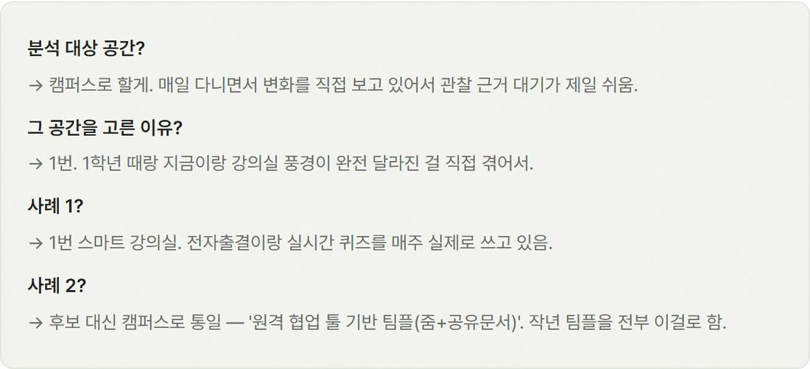
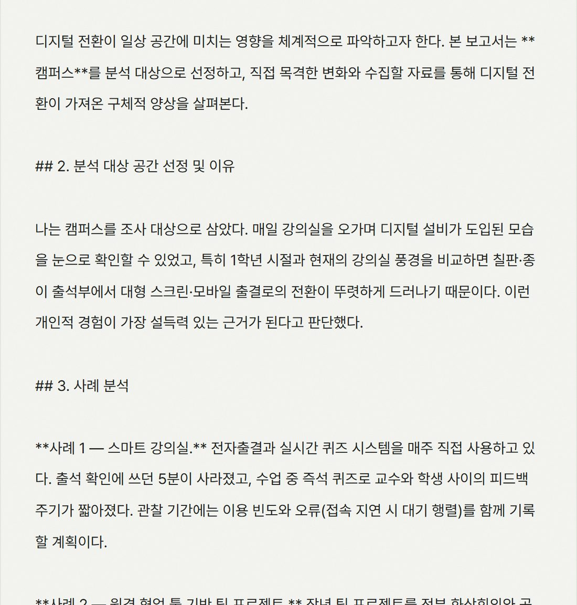
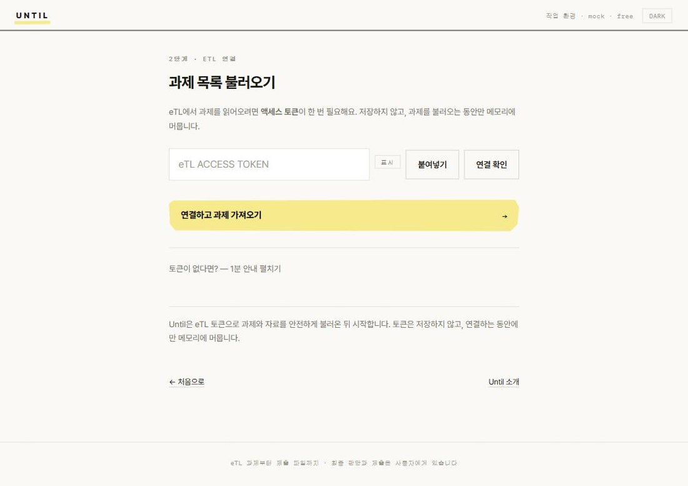

WORKS WITH 서울대 eTL · CANVAS LMS
과제와 자료는 Until이 정리하고,
관점과 선택은 직접 결정합니다.
서울대학교 학생 클로즈드 베타 운영 중 — 초대는 메일로
작동 방식
예시용 설명이 아니라 현재 앱의 입력·초안·완성·제출 준비 화면과 같은 순서입니다.
eTL에서 불러오거나 직접 붙여넣습니다.
분량·형식·마감과 관련 자료를 확인합니다.
근거로 채우고 판단할 자리는 남깁니다.
처음에는 네 가지만 펼쳐 빠르게 답합니다.
제출 직전 점검 후 eTL에는 직접 올립니다.
지금 이렇게 돌아갑니다
01 · 양식 맞춰 내야 할 때
참가 보고서, 결과 보고서, 확인서 — 칸은 정해져 있고 채우는 건 늘 잡무였죠.
업로드한 hwpx 양식의 칸을 채운 파일로 받아요.
항목별 분량을 각각 지켜 채우고, 모자라면 그 항목만 다시 써요.
프로필에 한 번 저장하면 기본정보 칸은 되묻지 않고 채워져요.
02 · 리포트 초안이 막힐 때
자료로 채울 수 있는 건 전부 쓰고, 당신의 판단이 필요한 자리는 비워서 드려요.


논지 선택은 후보만 — 확정은 언제나 내 클릭이에요.
내가 쓴 글을 올리면 초안부터 내 말투로 시작해요.
자료로 못 채우는 자리는 지어내지 않고 비워서 물어봐요.
03 · 제출 직전 확인할 때
“양식 지켰나?”를 당신에게 되묻지 않아요. 지켰다는 근거를 보여드려요.
D-day와 마감 시각을 자동 감지해 배지로 보여줘요.
항목별 글자 수를 재서, 몇 자 모자란지까지 짚어줘요.
원본 양식의 표·항목이 유지됐는지 근거와 함께 보여줘요.
until로 과제를 끝내보고, 어떻게 썼는지 한 줄 남겨주실 분.
아래를 남겨 주시면 순서대로 초대장을 보내 드려요.
보조 기능 · 불러오기
과목마다 들어가 뒤질 필요 없이, 미제출 과제가 D-day순으로 정렬돼요.
eTL 없이 과제 텍스트를 붙여넣어도 같은 흐름으로 돌아가요.

반대입니다. 산출물은 '내 결정이 비어 있는 초안'이고, 완성은 내 답으로만 이뤄집니다. 판단을 대신 정하는 순간을 검증기가 막아요.
수업마다 정책이 다릅니다 — 그 확인과 판단도 당신 몫이에요. Until은 그 판단조차 대신 정하지 않습니다.
eTL 토큰은 기본적으로 세션 메모리에만 둡니다. 로그인 후 '다음에도 자동으로 연결'을 켠 경우에만 내 계정에 암호화해 보관하고, 설정에서 언제든 지울 수 있어요. 답 히스토리도 언제든 보고 지울 수 있고, 코드는 오픈소스(Apache-2.0) 입니다.
베타는 무료 체험 크레딧으로 시작합니다. 로컬 버전은 계속 무료예요.
베타는 서울대 eTL 중심이지만, 붙여넣기 방식은 학교와 무관하게 동작합니다.
양식 파일을 다루고 초안을 다듬는 일은 넓은 화면에서 하는 작업이라, 데스크탑에 맞춰 설계했습니다. 모바일에서는 과제 목록과 마감 확인까지 편하게 되고, 실제 작성은 데스크탑에서 이어서 하시면 됩니다.
써보시면 압니다 — 12페이지를 시켜도 700자를 주고, "강의당 300자"를 전체 300자로 줄이고, 양식은 통짜 글로 돌려줍니다. until은 그 지시를 코드로 검증하고, 어긋나면 그 항목만 다시 씁니다.
맞아요 — Canvas(eTL의 기반)의 AI는 교수님의 강의 관리용, 그리고 학생용은 플래시카드·연습 퀴즈 같은 '공부 도구'입니다. 제출물을 만들어 주는 도구는 아니고, 학교가 고객인 LMS는 앞으로도 그걸 만들 수 없어요. until은 그 반대편 — 과제 산출물을 당신의 판단 직전까지 만들고, 판단은 남겨 두는 도구입니다.